|
Towards URLLC with srsRAN
This page presents latency analysis in radio access networks using the srsRAN software. The latency improvement part will be added shortly. Last updated on October 3, 2024.
Feel free to contact me if you have any queries.
1 Background
1.1 Radio Access Network
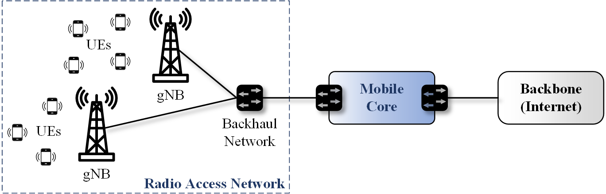
The 5G network consists of two subsystems: the Radio Access Network (RAN) and the Mobile Core.
- The RAN corresponds to a distributed set of base stations (named gNB).
- The Mobile Core provides and ensures Internet connectivity.
1.2 gNB’s Data Processing Pipeline
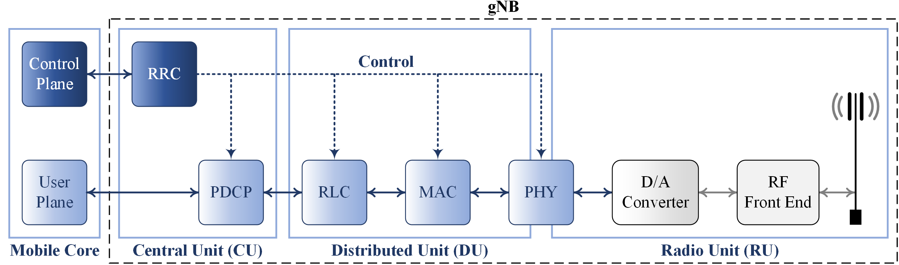
The functionality of a gNB can be split into the Radio Unit (RU), Distributed Unit (DU), and Central Unit (CU).
- The Radio Link Control (RLC) layer handles segmentation and reassembly.
- The Medium Access Control (MAC) layer handles all real-time scheduling regarding resource allocation.
- The (upper and lower) physical (PHY) layer handles (de)coding and (de)modulation.
- The radio head (RH) converts radio frequency signals into samples and vice versa.
1.3 5G Frame Structure
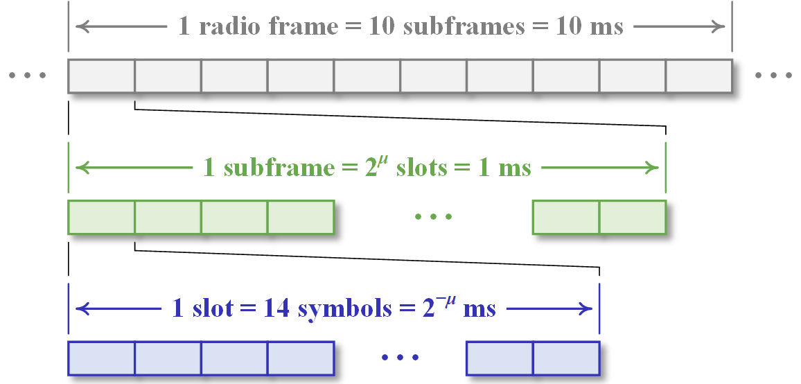
The 5G frame structure is designed to be more flexible than its predecessors.
At the heart of this design is the concept of numerology, labelled by µ.
- For instance, setting µ = 1, each slot has a duration of 0.5 ms.
2 Latency Analysis
2.1 Functionality of Radio Units
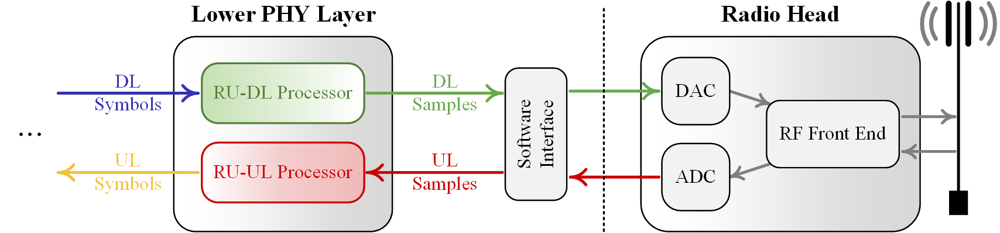
The RU-downlink (DL) processor performs OFDM modulation.
- It converts DL frequency-domain symbols into DL time-domain samples
The RU-uplink (UL) processor performs OFDM demodulation.
- It converts UL time-domain samples into UL frequency-domain symbols
2.2 Latency in Radio Units
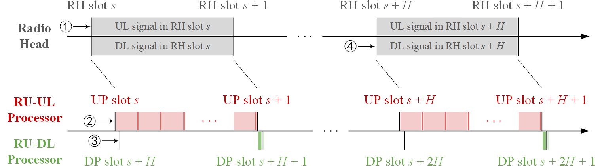
① When RH slot s begins, the RH receives the UL signal from the air, converts it into UL samples, and then forwards them to the software interface.
② After a short time, the RU-UL processor receives these samples for UP slot s from the software interface and demodulates them into UL symbols.
③ In DP slot s + H, the RU-DL processor first waits for the RU-UL processor to finish the reception and processing in UP slot s. It then prepares DL samples for DP slot s + H and forwards them to the software interface. After this, the software interface forwards these DL samples to the RH.
④ There exists an H-slot offset between the RU-DL processor and the RH, implemented for DL radio preparation time (e.g., USB and RF chain).
2.3 Functionality of Distributed Units
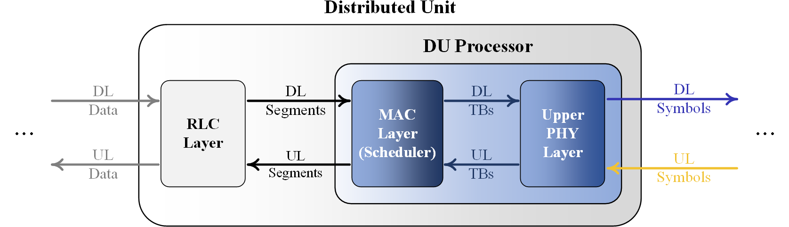
The DU processor reads DL segments from the RLC layer and converts them into DL frequency-domain symbols, and vice versa.
It handles all real-time scheduling regarding physical resource allocation.
2.4 Latency in Distributed Units (Downlink)
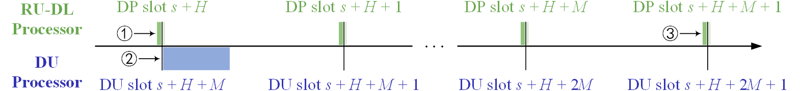
① When the RU-DL processor finishes preparing DL samples for DP slot s + H − 1, it notifies the DU processor of the beginning of DU slot s + H + M. When it receives the notification, the DU processor first decides on resource allocation for DL transmission and/or UL reception.
② If the current DU slot is a DL slot, the DU processor then reads DL segments from the RLC layer and converts them into DL symbols.
③ These symbols wait in the computer’s memory and will be accessed by the RU-DL processor after M slots, i.e., at the end of DP slot s + H + M.
There exists an M-slot offset between the RU-DL processor and the DU processor, it is used by the DU processor to prepare resource allocation results and DL frequency-domain symbols in advance.
This offset provides a margin for handling unexpected slowdowns in the DU processor, thus ensuring the uninterrupted operation of the RU-DL processor.
2.5 An Example for the Case of M = 1
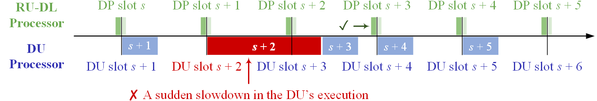
In DU slot s + 2, a sudden slowdown in the DU’s execution occurs. The execution time in this DU slot is much longer than usual.
As the DU processor prepares the DL symbols one slot in advance, the RU-DL processor can still access the symbols at the end of DP slot s + 2.
The time offset restores once the DU resumes normal execution.
2.6 Latency in Distributed Units (Uplink)
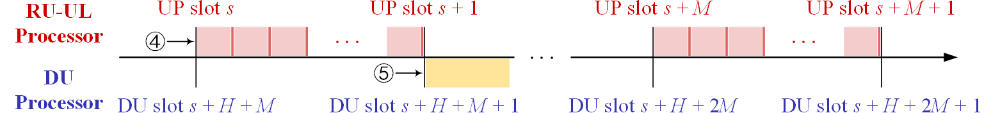
④ When the RU-UL processor finishes preparing UL symbols for UP slot s, it forwards these symbols to the DU processor immediately.
⑤ Using the resource allocation results decided (H + M) slots ago (in DU slot s), the DU processor converts the UL symbols into UL segments.
2.7 Summary of Slot Offsets
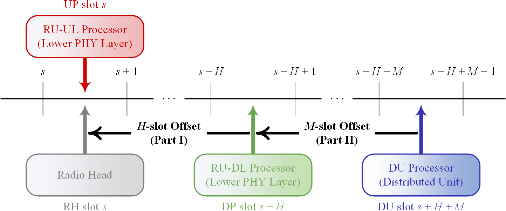
At any given time point, there exist an H-slot offset and an M-slot offset.
- The H-slot offset is between the RU-DL processor and the RH.
- The M-slot offset is between the DU processor and the RU-DL processor.
These offsets arise from system implementation considerations.
2.8 Sources of Latency
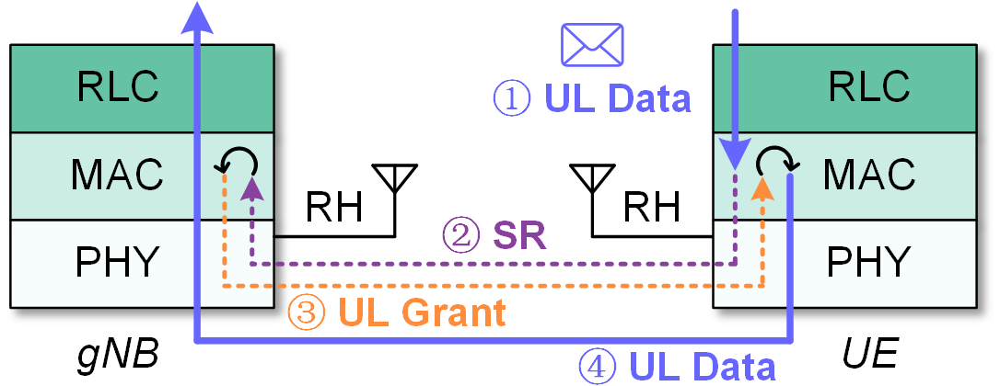
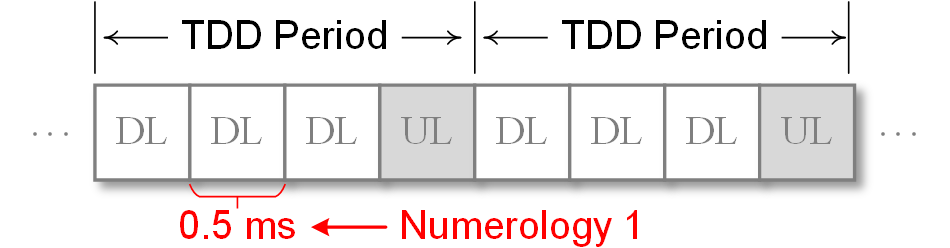
The latency introduced by system implementation: H-slot and M-slot offsets
The latency introduced by 5G specifications:
- Scheduling Request (SR): When a UE has UL data to send, it first sends an SR to the gNB. The gNB then schedules and sends an UL grant to the UE. The UE transmits the UL data to the gNB after receiving the UL grant.
- Time Division Duplex (TDD): The TDD uses the same frequency band for both DL and UL transmissions. Each slot within a TDD period is thus specifically designated to be DL, UL, or mixed.
2.9 Latency Breakdown
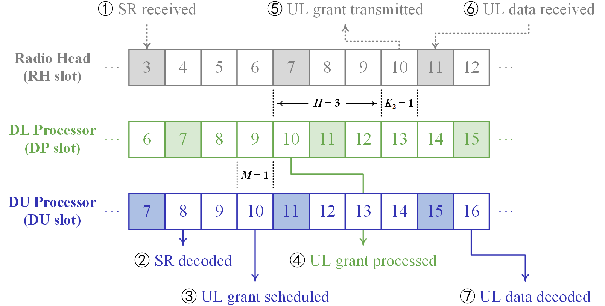
Steps ③ to ⑤: DL one-way latency > (H + M + 1) × 0.5 ms = 2.5 ms
Steps ① to ⑥: UL one-way latency > 9 × 0.5 ms = 4.5 ms
3 Evaluation
3.1 Latency Results: Baseline (srsRAN)
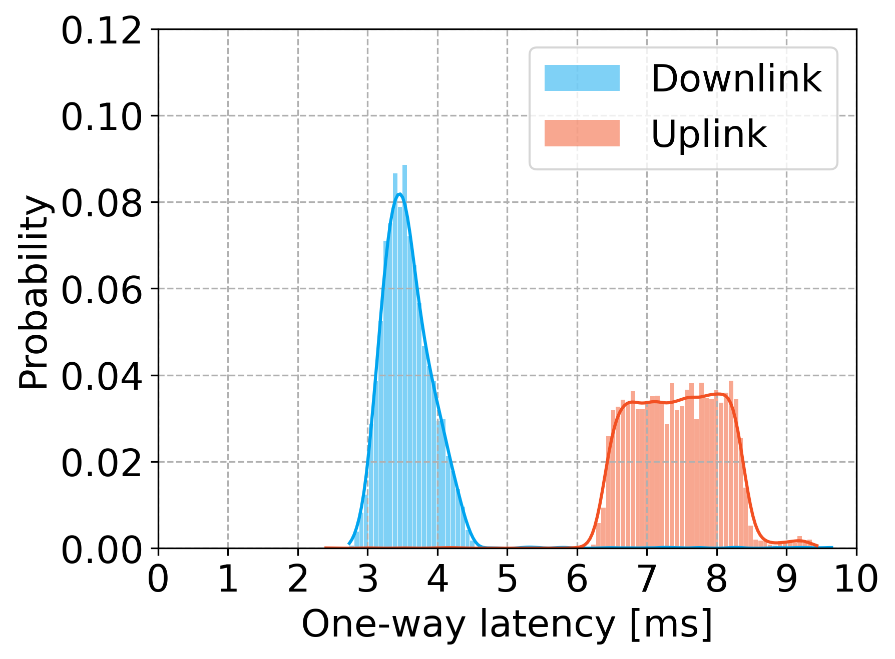
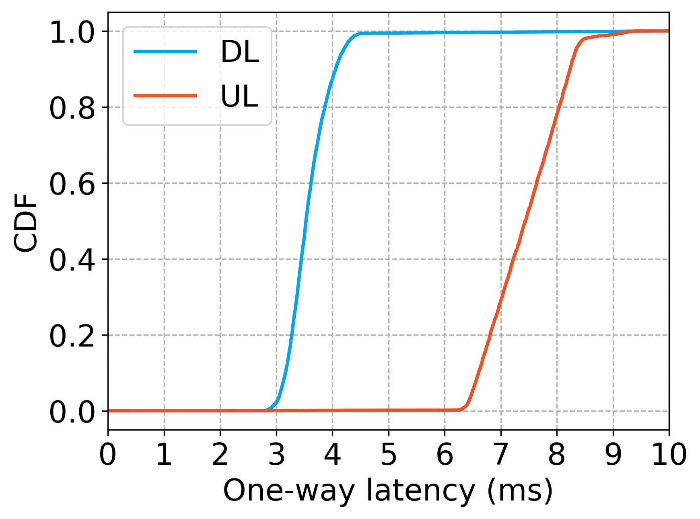
The DL one-way latency is mainly spans from 3 ms and 4.5 ms, while the UL one-way latency is mainly spans from 6 ms to 8.5 ms.
The results comply with the lower bounds 2.5 ms and 4.5 ms.
|